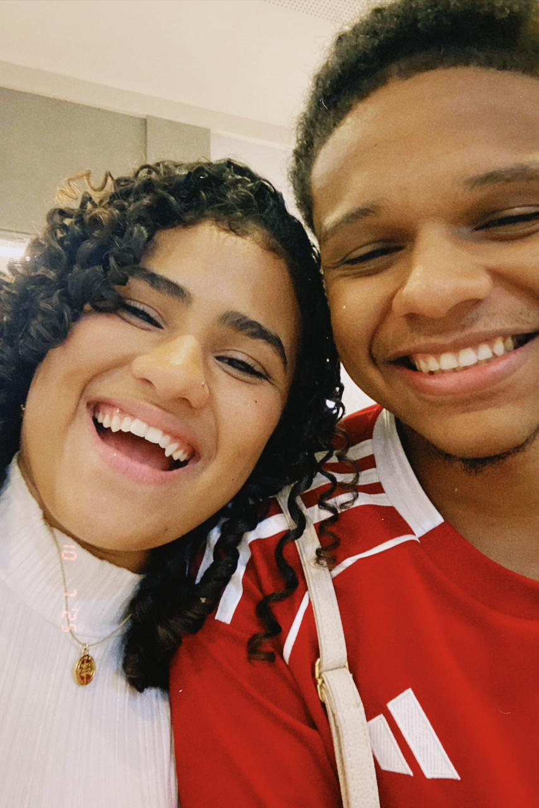

Olá Lara, pensei em diversas formas de te contar isso, mas sei que as coisas estão meio distantes entre nós. Mesmo assim acredito que talvez possamos encontrar um caminho. Eu sei que parece impossível — eu também acharia — mas eu creio em um Deus que fez coisas impossíveis também.
Não quero parecer insistente, longe disso. Só quero poder te amar novamente. A culpa é sua por ser uma pessoa completamente amável.
Desde o momento em que te dei uma aliança e disse que te queria para a vida toda, eu não menti. Eu realmente quis isso.
Não sei o que o futuro guarda, mas escrevo isso para demonstrar que ainda existe muito amor aqui.
